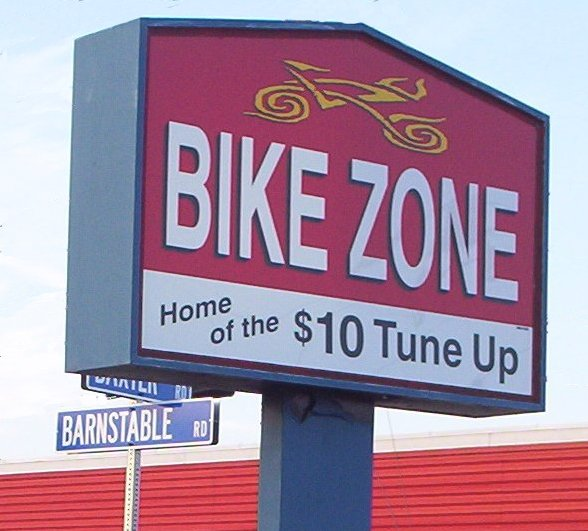

| # of bikes abandoned: | 2 |
| # of miles biked: | 20mi from Plymouth to Buzzards Bay (bike 1); 18mi from Hyannis to Ocean Edge (bike 2); 32mi from Ocean Edge to PVC (bike 2) |
| # of miles driven: | 20mi from Buzzards Bay to Hyannis |
| # of miles flown: | 46 |
| # of dollars spent: | $97.10 (flight), $52.50 (bike), $25 (bike accessories), $47 (Zipcar to recover $52 bike) |
I didn't have my digital camera with me. Perhaps that was for the best, given the rain. Also, my camera is broken (why does all my stuff break?)
Left Edgerton at 8:20am after 20 minutes of aimless wandering, showering, etc. Biked to South Station, arriving at 8:40, which would seem to be plenty of time for the 8:50 train to Plymouth. Unfortunately, May 3 being the first workday of May, there was a line for train passes (and, of course, tickets). This line was allegedly 5 minutes long, but looked much longer. I go and ask the information desk what gate the train to Plymouth departed from, and if I could buy tickets on the train. The guy replies, "look at the board" and "no". Not very useful, especially since it is indeed possible to buy train tickets on the train (if one has cash).
I rush to the appropriate gate and ask the person at the train if I can buy a ticket on the train; he gives the correct answer and I embark. When the ticket collector arrived, I said that I needed to buy a ticket, so she comes back with the tickets. Meanwhile, I discover to my dismay that I failed to transfer cash to my shorts, prompting the (nice) conductor to fetch an irregular fare form. Perhaps, she explained, they would send me a bill. Or perhaps they would not. Later, a mean conductor quizzed me (and another guy) about why we were irregular fares. "I just forgot. I expected it to be in my pocket, but it wasn't." She said that she wouldn't have let us on the train, and that we weren't showing any respect for the other ticket collector person. (?!)
In any case, I arrived at Plymouth at 9:40 and shopped at Wal-Mart for 40 minutes, picking up a fanny pack (60" waist, $4!), a bike pump and an inner tube. Wal-Mart on a Monday morning is completely filled with mothers and young children. Left Plymouth in grey weather, with occasional raindrops.
Massachussetts is surprisingly hilly. There aren't actually any difficult slopes, but there are a lot of gently rolling ups and downs. After an hour and a half, I reached Cedarville, feeling really tired and out of shape. Eating lunch (aka breakfast) turned out to solve that problem. I first tried to eat lunch at a breakfast/bakery, but, as advertised, they had nothing but oven things and breakfast foods. I did get a placemat/map, though, which was pretty useful; it sure beat blundering around. I got a "home-baked lasagna" and a pink lemonade a few doors down in the strip mall.
Next, I continued on MA-3 until it became US-6, near the Cape Cod Canal. Tragically, I got confused about east and west, and went west on 6 for a while, arriving at Buzzards Bay. There, I was informed (at a Dunkin Donuts, complete with police officer) that the 6A was 6mi (actually 4mi) east of where I was, so I figured out that I had taken the wrong turn. Yet more tragically, trying to get back on track, I was going up a slope in the now-more-than-spitting rain, my bicycle failed spectacularly and destructively; this was brought to my attention by the fact that moving the pedals no longer caused forward motion. Fine, I thought, this has happened many times before; it must just be the chain falling off the front gear wheel (name?). Wrong! The chain had, indeed, fallen off, but that was caused by the derailleur being completely out of position. The derailleur was out of position because the axle was off the forks. Usually it's a bit tricky to put the axle on the forks for the rear wheel, so I struggled for a bit to put the axle back on. This was not to be. I then discovered that the gear-side fork was completely broken: both tines were quite bent out of shape, and the reinforcing triangle for the lower tine had actually broken. Surely I would be able to make a temporary repair and reach a bike shop or something. Unfortunately, I had no wrench. Highway detritus did not include anything hard, only bits of foam and plastic (there's a lot of it). But highways come with crash barriers on the side, so I spent some time attempting to use gravity to force the fork back into position by lifting the bike above the barrier and pushing down. I think I made some significant progress after 30 minutes or something, but the last half centimetre gap just wouldn't close, so I bailed and set off on foot, remembering that there should be a rest area not too far away (I hoped).
Fortunately, there was a guy in a pickup truck talking on his cell phone. Luke, a student at the Massachussetts Maritime Academy, was heading to exit 6B on US 6, so he offered me a ride to there; he'd been stuck in a similar position himself in the past, so he sympathized with my plight. He would have driven me to Brewster, he said, but had to be somewhere relatively soon. I could, however, take the bus to the new Hyannis Transportation Centre. I was, once again, really lucky; I got there at 1:48PM, and the bus left at 1:50PM. I got my $2 ticket and ran off to take the bus. I was able to put the two pieces of my bike on the bus and get to Hyannis. Obviously, from Hyannis, there is no direct bus to Brewster; one of the helpful people suggested that if I was willing to walk 3 miles, then I could probably get off the Orleans bus at the 124 junction. More helpfully, there was a bike shop near the roundabout, said one of the bus ticket sellers. I also saw a car rental place, which would have been a backup option. I first walked up Barnstable Road and went to the Power Sports store, which didn't quite have what I wanted. It did have motorcycles. The guy with no habla ingles didn't help me, but someone else directed me to the Bike Zone, across from the KFC.

"Yep", they told me, "your bike is finished." That's what I had thought, but I did want a second opinion. Fortunately (?), my bike was quite crappy, so it wasn't a huge loss. I did leave the old bike there so that I could perhaps pick it up on Wednesday or something. They then proceeded to sell me a new used bike, contained in one of their storage containers of bikes. The guy said $60 at first, but only charged me $50. My Visa can definitely handle $50. I like supporting bike shops anyway, so $60 wouldn't have bothered me either. (This is actually a surprising bargain; used bikes go for $200 at Cambridge Bicycle?!) I also got directions from Hyannis to Brewster: it was still raining, and all roads, said the guy, sort of sucked, but he tried to give me the one that would involve the least road changes: I was to take the 28 S to the 134 N, then turn onto Satucket Rd, which would bring me directly to Brewster. I also called the Ocean Edge Resort (whose number I had gotten at the Hyannis Transportation Centre) and told them to pass on the message that I didn't get hit by a truck, as it was now 3:00 and I clearly wasn't there yet. The guy told me to expect a 1.5-2 hour ride.
After all that excitement, the rain stopped; nothing else happened for the rest of the forward journey. The new bike illustrated quite clearly that my old bike was really, really crappy and probably 10 years overdue for replacement: I was moving much faster on the new bike, with less effort, even if the new bike was really heavy to lift. The only complaint I had about the bike was the height of the seat. I didn't quite need the permanent wedgie. At the tail end of the trip, finding out that Satucket Rd actually was a designated bike route was quite nice; it even had a bike path at times.
Between all this excitement was the Center for Reliable Software retreat; I wrote my talk on modular pluggable analyses on Monday night.
On Wednesday, it's time to return to Boston. This time, my goal is to bike to Provincetown and to take the ferry back to Boston. Sounds good, huh. I leave Brewster around 1pm and arrive in Provincetown at 3:30pm without incident (30mi). The incident, however, is the lack of ferry from Provincetown to Boston until May 21. Oops. The two daily buses leave at 6am and 1pm. Note that 3pm is later than 1pm. Oops. Does Provincetown have a car rental place? No. No, it doesn't. At least not in the not-summer. Oops. Does Cape Air have any flights? Yes, at 4:30pm, but it's full. Oops. I go to the seniors' tour bus waiting around and talk to a guy, who says that they're from New Jersey. That doesn't sound too useful. They actually may have been staying in Hyannis, but I didn't really feel like bumming a ride with some old folks. Fortunately (a word that seems to be coming up often here!) when I call back Cape Air to inquire about their schedules tomorrow (since the printed schedules in the Chamber of Commerce are wrong) they now have 3 seats on the 8-seater to Boston at 4:30, provided that I can get to the airport in 20 minutes; they'll sell me a ticket for $97.10. I hop on my bike and pedal really fast to the airport. I think it took me about 10 minutes to do 3 miles; in any case, I clearly had time to spare. I got a handwritten ticket; nice, huh? Yep, I had to go through security at Provincetown. The metal detector was really sensitive, too, catching my prox card (nice!) and some mountings from my now-defunct bike. I regret to report that the 20-minute flight was mostly boring, being over water. I arrive at the airport T station at 5:06 and get back to Stata by 5:30.
On Thursday, I decide to rent out Prius Pam and drive to Provincetown to fetch my bicycle. It's not a great bicycle, but it beats buying yet another bicycle; it seems a bit silly to go through 3 bicycles in 4 days. Since Zipcar has spring specials, it even seems cheaper to go by Zipcar than by ferry ($50 vs. $63, with bike transport). I convince Dave to come with me, and we leave at 3:40 from Alewife; I had some trouble starting the car (the engine lock was on because my card was incompletely scanned), but a call to 1-866-4ZIPCAR fixes that problem, and we're off. I stop by the Bike Zone just before 7 and a skeptical guy wanted to send me away, but I convince him that I'm not trying to steal a bike ("It'll be obvious that this bike is broken.") and he grudgingly sends the other guy to open up the storage container. I eat too many fried clams in P-town and we drive back; leaving at 10:00, we get to Cambridge at 12:20. I lock up my bike (stupidly, not at Edgerton); then we decide to drive to Edgerton and fetch a jacket, and return the car. Since it's a relatively nice day, the 1 hour walk home is all right.
{kind=link}
{kind=link}
{kind=link}